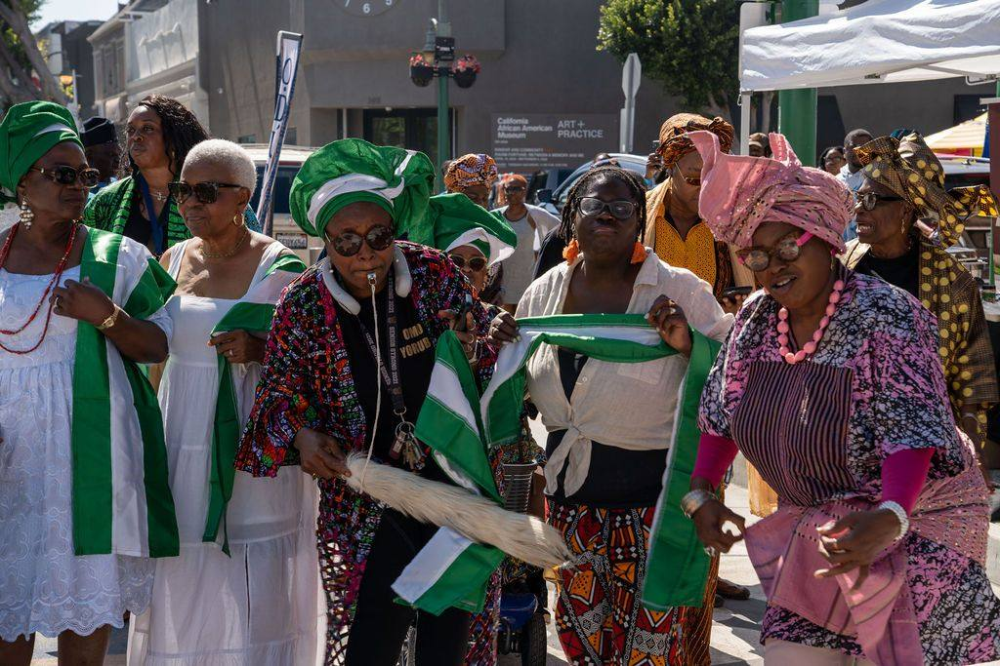
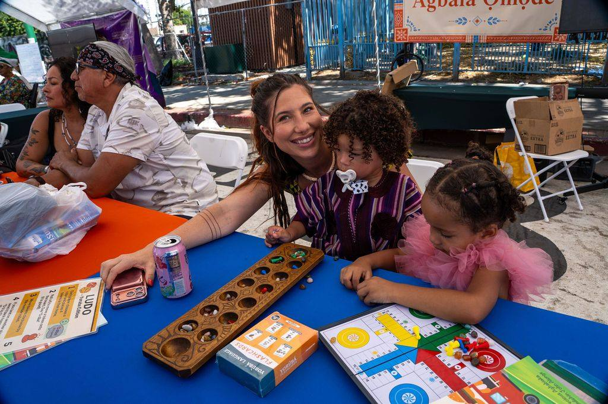
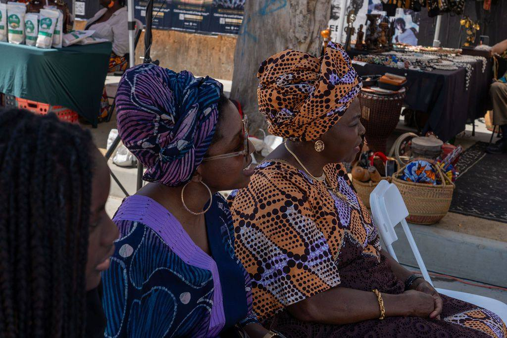
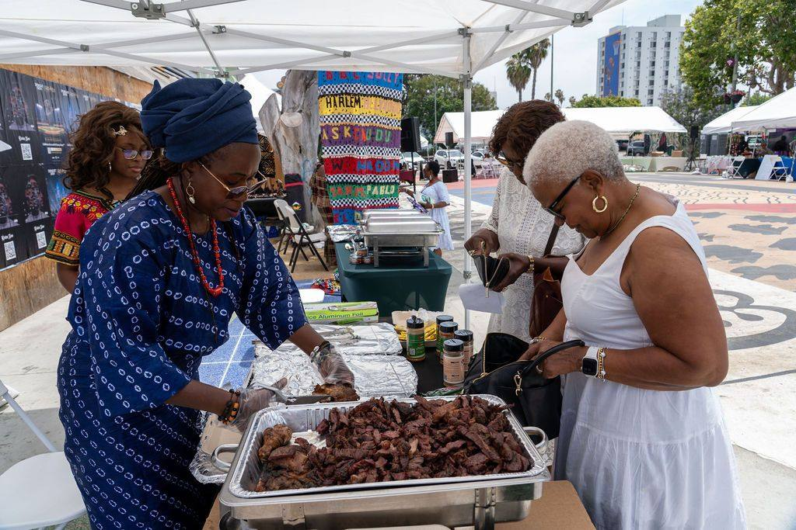
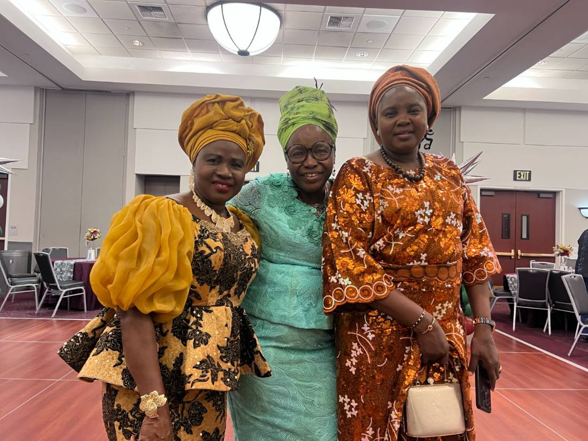
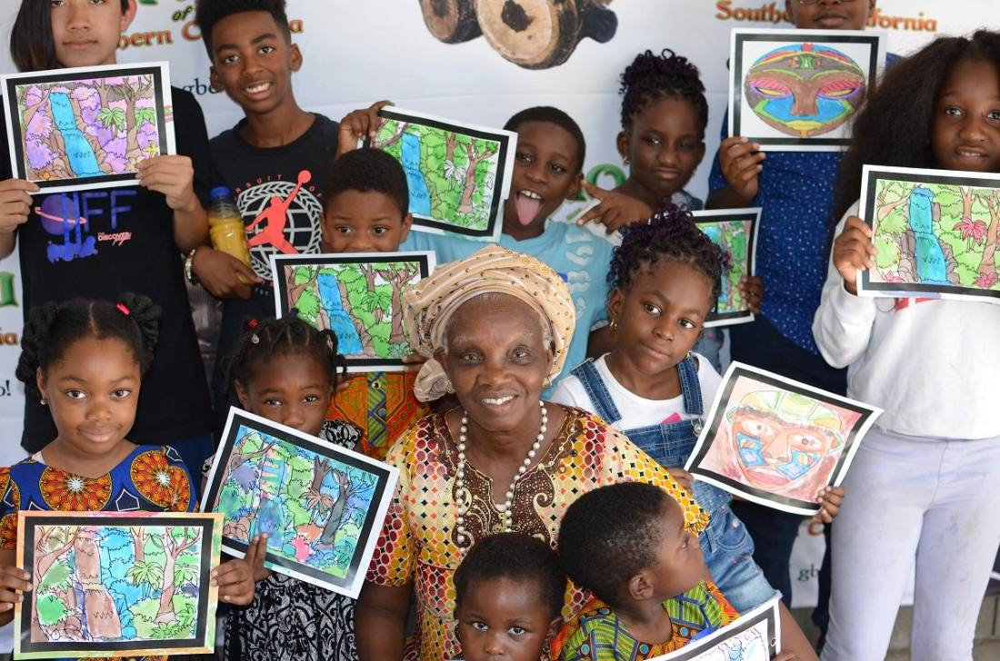

A 501(c)(3) serving the Yoruba community of Southern California through language, festival, and family programs.
Every number carries a source line: the year it covers and how it was counted.
Omo Yorùbá runs online Yoruba language lessons and an annual public festival, and the two hold each other up. The school keeps a small group of families in contact with the language every week. The festival puts that work in front of thousands of people in Leimert Park for one day, in public, for free.
Where a program has no number yet, we say what is being measured this year.
Learners taught since 2019, with 71 percent returning for a second term. Retention is the number that matters here.
Attendance in June 2026 across four zones, with 38 vendors hosted at Ọjà Balógun.
Children through Àgbàlá Ọmọde and the STEM Hub in 2026. Return rate is being measured for the first time this year.
Solar Hub is piloting on two community buildings. Green Goods is planned for 2027. Our newest work.
Odunde is a free public cultural day held in Leimert Park Plaza. It is open to the whole neighborhood, not only to Yoruba families, and it is one of the few days in the year when that plaza is programmed end to end by a community organization rather than rented out.
A parent, an elder, and a vendor, in their own words.
[ Quote from a Language Lessons parent, two or three sentences on what Saturday mornings changed at home. ]
[ Quote from an elder of Ẹgbẹ́ Ìbílẹ̀, two or three sentences on passing the language to the grandchildren. ]
[ Quote from a vendor at Ọjà Balógun, two or three sentences on what festival day does for the business. ]
Across years and programs, captioned with the year and what is happening.






What we are, how we are governed, and what we publish. Where a document is not ready yet, we say when it will be.
Everyone who has supported the work.